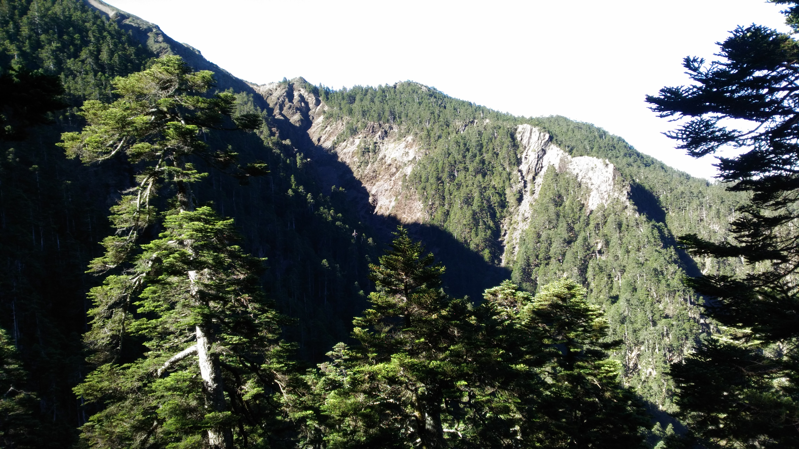
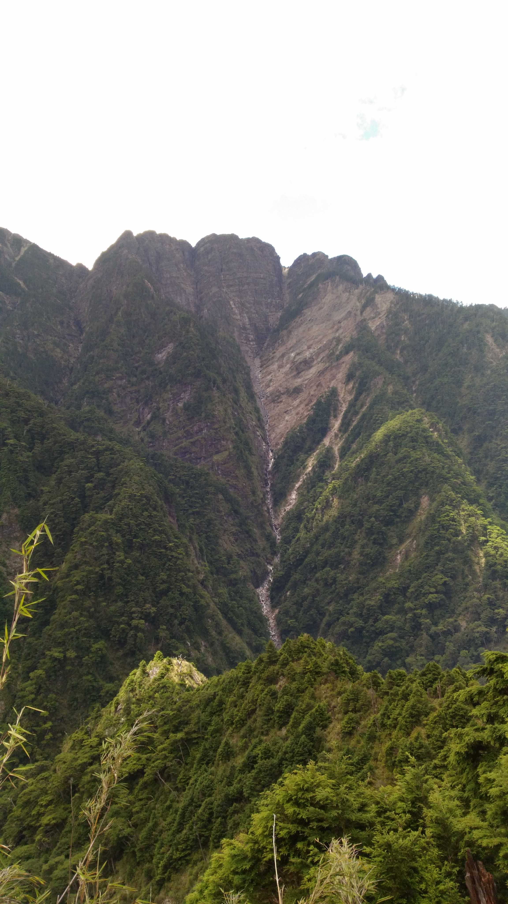
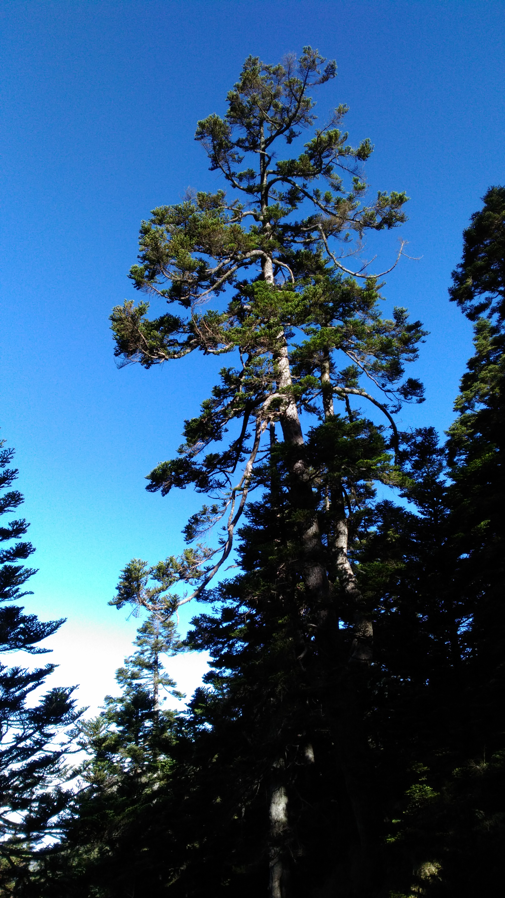
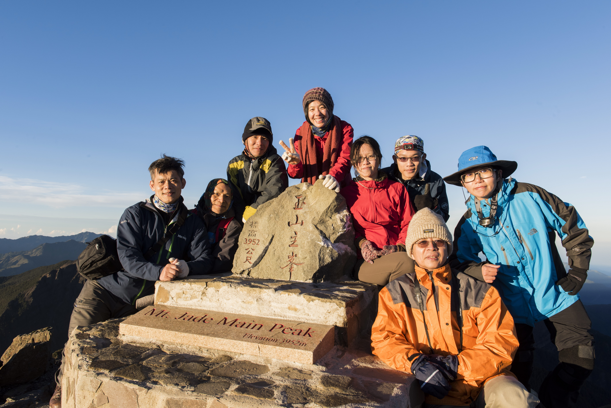

<!DOCTYPE html>
<html lang="zh">
<head>
  <meta charset="utf-8">
<title>2017 玉山行(Mt. Jade; Yushan, Taiwan 2017)</title>
<body background="backgroundpp.jpg">
<center><h2>2017<br>玉山行<br>Part IV (第４分頁)<br>(Mt. Jade; Yushan, Taiwan 2017)</h2></center>
  <blockquote>
   <table width="95%"  border="0" cellspacing="5" cellpadding="0"> 
      <tr align="center" valign="top"> 
            <td><a href="Mt-Jade-2017-I.html">第１分頁</a></td>
            <td><a href="Mt-Jade-2017-II.html">第２分頁</a></td>
            <td><a href="Mt-Jade-2017-III.html">第３分頁</a></td>
            <td><ahref="Mt-Jade-2017-IV.html">第４分頁</a></td>
      </tr>
          
   </table>
  </blockquote>
<hr>

<p>
<table width="95%"  border="0" cellspacing="5" cellpadding="0"> 
      <tr align="center" valign="top"> 
            <td valign="middle"></a></td>
            <td valign="middle"></a></td>
      </tr>
      <tr> 
            <td align="center">01<br>豐富林相</td> 
            <td align="center">02<br>林相豐富</td>
      </tr> 

      <tr> 
            <td align="center" colspan=3>　<p>　<p>　</td>
      </tr>

      <tr align="center" valign="top"> 
            <td valign="middle"></a></td>
            <td valign="middle"></a></td>
      </tr>
      <tr> 
            <td align="center">03<br>巍峨挺拔，昂首雲天</td> 
            <td align="center">04<br>再來張團體照<br>Happy Ending!</td> 
      </tr> 
      <tr> 
            <td align="center" colspan=3>　<p>　<p>　</td>
      </tr>
</table>
<hr>

<h2>參考：</h2>
<h3>
<ul>
  <li><a href="https://zh.wikipedia.org/wiki/%E7%8E%89%E5%B1%B1">玉山</a> （ <a href="https://zh.wikipedia.org/wiki/Wikipedia:%E9%A6%96%E9%A1%B5">維基百科</a>，自由的百科全書）</li><p>
  <li><a href="https://zh.wikipedia.org/wiki/%E7%8E%89%E5%B1%B1%E5%9C%8B%E5%AE%B6%E5%85%AC%E5%9C%92">玉山國家公園</a>  （ <a href="https://zh.wikipedia.org/wiki/Wikipedia:%E9%A6%96%E9%A1%B5">維基百科</a>，自由的百科全書）</li><p>
  <li><a href="http://www.ysnp.gov.tw/default.aspx">玉山國家公園官方網站</a>（玉山國家公園管理處；隸屬內政部，營建署）</li><p>
  <li><a href="http://tw.hiking.biji.co/index.php?q=trail&act=detail&id=299&title=%E7%8E%89%E5%B1%B1%E4%B8%BB%E5%B3%B0%E6%AD%A5%E9%81%93">玉山主峰步道</a>  （<a href="http://tw.hiking.biji.co/">健行筆記</a>）</li><p>
  <li><a href="https://www.youtube.com/watch?v=ZgBqRBeTI3M">2015和你一舞</a>，縮時攝影；玉山國家公園 玉山北峰 玉山氣象站 (Youtube)</li><p>
  <li><a href="http://www.ysnp.gov.tw/upload/documents/20121206_164300.23064.pdf">精彩玉山攝影比賽得獎作品</a>2012，玉山國家公園管理處，PDF，42 幀</li><p>
  <li><a href="http://www.cwb.gov.tw/V7/observe/real/46755.htm">現在天氣--玉山</a>  - <a href="http://www.cwb.gov.tw">中央氣象局</a></li><p>
  <li><a href="https://npm.cpami.gov.tw/information_place2.aspx?id=343">東埔山莊</a>(臺大實驗林)</li><p>
  <li><a href="http://dongpu.mmweb.tw/?ptype=info">東埔山莊簡介</a></li><p>
  <li><a href="http://dongpu.mmweb.tw/">東埔山莊及專車接駁服務</a></li><p>
  <li><a href="https://zh.wikipedia.org/wiki/%E6%8E%92%E9%9B%B2%E5%B1%B1%E8%8E%8A">排雲山莊</a>  （ <a href="https://zh.wikipedia.org/wiki/Wikipedia:%E9%A6%96%E9%A1%B5">維基百科</a>，自由的百科全書）</li><p>
  <li><a href="https://npm.cpami.gov.tw/information_place2.aspx?id=1">塔塔加登山口</a></li><p>
  <li><a href="https://slyfchen.blogspot.tw/2017/04/blog-post_7.html">玉山薄雪草 ─浪漫主義的象徵</a> （<u>陳玉峯</u> 教授，2017年4月7日, <a href="https://slyfchen.blogspot.tw/">山林書院部落格</a>）</li><p>
  <li><a href="http://slyfchen.blogspot.tw/2014/05/blog-post_13.html">誰是攀登玉山主峰的第一人</a> （<u>陳玉峯</u> 教授，2014年5月13日, <a href="https://slyfchen.blogspot.tw/">山林書院部落格</a>） </li><p>
  <li><a href="http://blog.xuite.net/ncku_ob_blog/twblog/209485028-%E9%AB%98%E5%B1%B1%E7%94%9F%E7%90%86%E2%80%94%E2%80%94%E7%8E%89%E5%B1%B1%E5%9C%8B%E5%AE%B6%E5%85%AC%E5%9C%92%E7%B6%B2%E7%AB%99%E4%BA%94%E7%AF%87%E6%96%87%E7%AB%A0">高山生理——玉山國家公園網站五篇文章</a> （<a href="http://blog.xuite.net/ncku_ob_blog/twblog">成大登山薪傳協會 _ 成大山協 OB 的部落格</a>）</li><p>
  <li><a href="http://www.tonyhuang39.com/page/cc735.html">望玉山記</a>陳夢林 （from: <a href="www.tonyhuang39.com">Tony的自然人文旅記</a>）</li><p>
  <li><a href="http://www.tonyhuang39.com/tony/tony1211.html">[台灣老照片]．1939年．新高阿里山國立公園</a> （<a href="www.tonyhuang39.com">Tony的自然人文旅記</a>）</li><p>
  <li><a href="http://gohiking.myweb.hinet.net/h6/NTOyushanmain.htm">由塔塔加登頂玉山主峰</a> （<a href="http://gohiking.myweb.hinet.net/">HiSpring 優遊山林溪</a>）</li><p>
  <li><a href="http://forestlife.info/Onair/043.htm">塔塔加遊憩區</a> （<a href="http://forestlife.info/">森情寫意</a>）</li><p>
  <li><a href="http://digimuse.nmns.edu.tw/da/collections/gg/rm/ex/0b00000181e341a9/">玉山</a>-- 地質學變質岩學習資源 - <a href="http://digimuse.nmns.edu.tw/portal/">自然與人文數位博物館</a> - <a href="http://www.nmns.edu.tw/">國立自然科學博物館</a> </li><p>
  <li><a href="https://www.youtube.com/watch?v=J9O4tEKLwFk">《玉山頌》</a>(12:00; Youtube)</li>
  <blockquote>
  <p>詞：李敏勇 / 曲：蕭泰然<br>
  發佈日期：2011年11月30日<br>
2008聽見台灣的聲音 / 地點：國家音樂廳
國立台灣交響樂團 / 指揮：邱君強 / 台中市合唱團 / 台中室內合唱團 / 新世紀合唱團</p>
  <p>

《遠遠看你是天；佇真高的所在。徛佇山頂你是地；青翠樹林，綠色田園滿四界。蝴蝶自由飛；日時白雲擁抱你。蝴蝶自由飛；暗暝天星金熾熾。啊！玉山！台灣美麗島，神聖的記號­！現實的你是父親；給我魂魄，給我意志佮勇氣。夢中的你是母親；佇我心內給我愛。走自由的路；行過悲情的過去。走找自由路；殷望起造新世紀。啊！玉山！台灣新國度，光榮的­標記！》</p> 
<p> 這首交響詩是描寫；屹立於台灣中心寒冷高處的玉山，遠離塵世，傲視天下，那種神聖與尊嚴，也正是〝台灣魂〞之所在！曲子的序樂是藉由鋼琴的琴音與橫笛緩緩的奏出，就像是一­縷輕煙優柔地飄過玉山的峰頂，雖然揮散著無限的深情卻又披上一層令人敬畏的神祕。旋律譜出大自然給予生命的氣息與力量。鋼琴以極細緻優雅的音符組合彈奏出對美麗島"For­mosa"的讚歌！循著美麗的旋律溫暖著美麗島上人們，同時也孕育出島上人們善良的心靈；接著由鋼琴逐漸激動的彈奏，樂曲漸漸地跟著掀起洶湧的高潮，揭開了四百年來；由於­外邦的入侵，風湧雲起，台灣的子民歷經了許多血汗的掙扎與奮鬥。旋律在一段激情之後；由清脆的小鼓聲引出木管、銅管與弦樂，此時旋律也開始將激情收斂，藉以表達雖然隨著歷­史一頁頁的過去，即使景物一年年的變遷，美麗島上唯一沒有變的是永遠屹立不動的玉山；是神聖的；決不可侵犯！是尊嚴的；不接受羞辱！於是管弦樂與大合唱接著歌頌著：啊！玉­山！台灣新國度！啊！玉山！光榮的標記！在美麗與歡樂的樂聲中結束，彷彿也到達了玉山的頂峰！ </p>
  <p>也許有很多台灣人尚未爬過玉山，甚至這輩子也不一定有機會親自到達山頂，去體會玉山令人讚嘆的一切。但是，透過媒體的介紹以及音樂的歌頌，我們還是可以感受到玉山在這塊土­地上的重要性，並且以最虔誠的心及行動來守護「玉山」的神聖與尊嚴。讓世世代代的台灣子民都能驕傲地說出：台灣聖山的名字叫「玉山」。
Ken 1999-08-02於淡水</p>
  <p>from: <a href="https://www.youtube.com/watch?v=J9O4tEKLwFk">https://www.youtube.com/watch?v=J9O4tEKLwFk</a></p>
  </blockquote>
  <li><a href="http://tln.nmtl.gov.tw/ch/M12/nmtl_w1_m12_s1_c_1.aspx?sid=118">玉山去來</a>，陳列（<a href="http://tln.nmtl.gov.tw/ch/index.aspx">台灣文學網</a>-文學地景-遇見作家）</li><p>
  <li><a href="https://www.youtube.com/watch?v=9cJtOe-keCo">玉山攻頂4 - 排雲到玉山頂</a>(Youtube)</li><p>
  <p>
  <li><a href="https://npm.cpami.gov.tw/news_4main.aspx?ID=1125">行動電話通訊品質一覽表</a>，發布日期：2014-02-07，發布單位：玉管處（<a href="https://npm.cpami.gov.tw/index.aspx">臺灣國家公園入園入山線上申請服務網</a>）</li><p>
</ul>
</h3>
<hr noshade>
<h4 align=right>updated on: 07.08 '17</h4>
<p>
<hr>
</body>
<!--
07.07 2017 create
------------
//-->
</html>